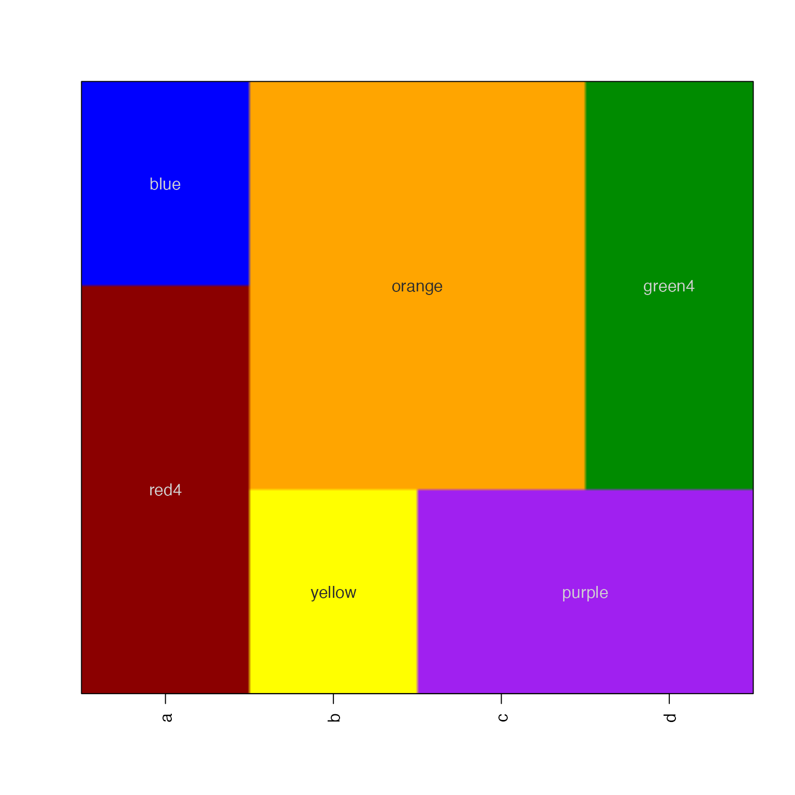
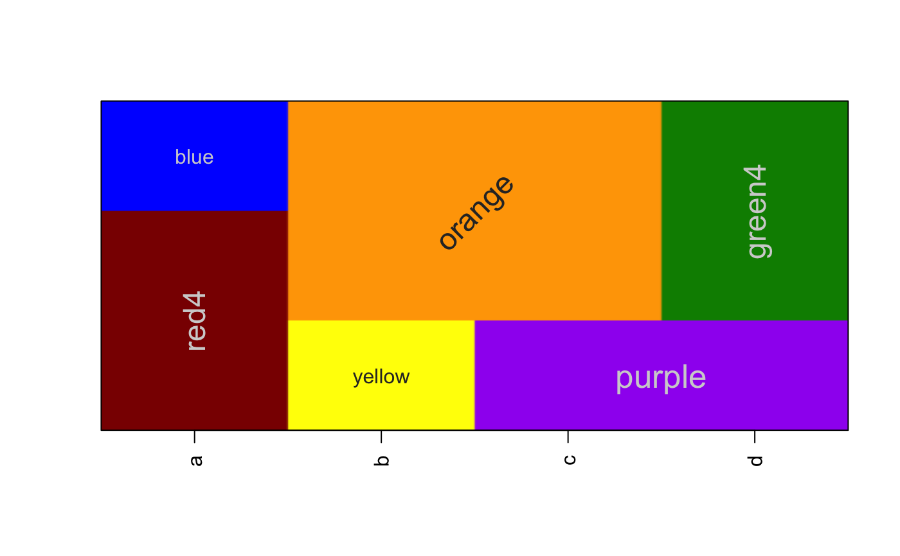

Display color raster image using a matrix of colors
imageByColors(
x,
useRaster = FALSE,
fixRasterRatio = TRUE,
maxRatioFix = 100,
xaxt = "s",
yaxt = "s",
doPlot = TRUE,
cellnote = NULL,
cexCellnote = 1,
srtCellnote = 0,
fontCellnote = 1,
groupCellnotes = TRUE,
groupBy = c("column", "row"),
groupByColors = TRUE,
adjBy = c("column", "row"),
adjustMargins = FALSE,
interpolate = getOption("interpolate", TRUE),
verbose = FALSE,
xpd = NULL,
bty = par("bty"),
flip = c("none", "y", "x", "xy"),
keepTextAlpha = FALSE,
doTest = FALSE,
add = FALSE,
...
)matrix or data.frame containing colors
logical sent to imageDefault to enable
raster rendering, as opposed to polygon rendering. This parameter is
highly recommended when the matrix is large (>50 columns or rows).
logical sent to imageDefault.
numeric sent to imageDefault.
character values compatible with par to
determine whether x- and y-axes are plotted. Set both to "n" to
suppress display of axes.
logical whether to create a plot, or simply return data which would have been used to create the plot.
matrix or data.frame of labels to be displayed on the
image. If groupCellnotes==TRUE labels will be placed in the center
of consecutive cells with the same label and identical color.
Currently, cell text is colored using setTextContrastColor
which uses either white or black depending upon the brightness of
the background color.
numeric vectors, with values
applied to cellnote text to be compatible with par("cex"), par("srt"),
and par("font"), respectively. If supplied a matrix or data.frame with
it is used as-is or expanded to equivalent dimensions of x.
If the vector is named by colnames(x) then it is applied
by column in order, otherwise it is applied by row, with values recycled
to the number of columns or rows, respectively. Note cexCellnote
can also be a list, with the list elements being applied to individual
cells in order. If the list is named by colnames(x), each list element
is applied to values in each column, in order. In future this parameter
may also accept a matrix of cex values as input. Final note: values are
applied to each cell, but when cell labels are combined with
groupCellnotes==TRUE, the value for the first matching cell is used.
Remember that values are placed by coordinate, bottom-to-top on the
y-axis, and left-to-right on the x-axis.
logical whether to group labels where consecutive cells contain the same label and identical cell colors, thus only displaying one label in the center of these groups.
character value indicating the direction to group
cellnotes, when groupCellnotes=TRUE: "row" will group cellnote
values by row; "column" will group cellnote values by column.
By default, it will first group cellnotes by "row" then
by "column".
logical indicating whether the cellnote grouping
should also include the cell color. When groupByColors=FALSE,
cellnote values will be grouped together regardless whether the
underlying colors change, which may be preferred when applying
text label to topographical data.
character value indicating how to apply adjustments for cexCellnote, srtCellnote, and fontCellnote, as described above.
logical indicating whether to adjust the axis label margins to ensure enough room to draw the text rownames and colnames.
logical whether to implement image interpolation, by default TRUE when useRaster=TRUE.
logical whether to print verbose output.
NULLL or logical used for par("xpd") to define whether
to crop displayed output to the plot area. If xpd=NULL then par("xpd")
will not be modified, otherwise par("xpd"=xpd) will be defined while
adding any cell notes, then reverted to its previous value afterward.
This parameter is mainly useful when cellnote labels may overhang the
plot space, and would be cropped and not visible if
par("xpd"=TRUE).
logical passed to setTextContrastColor
indicating whether the text label color should inherit the alpha
transparency from the background color. If TRUE then fully transparent
background colors will not have a visible label.
logical whether to run a test showing basic features of
imageByColors.
This function is similar to image except that
it takes a matrix which already has colors defined for each cell.
This function calls imageDefault which enables updated
use of the useRaster functionality.
Additionally, if cellnote is supplied, which contains a matrix
of labels for the image cells, those labels will also be displayed.
By default, labels are grouped, so that only one label is displayed
whenever two or more labels appear in consecutive cells. This behavior
can be disabled with groupCellnotes=FALSE.
The groupCellnotes behavior uses breaksByVector() to
determine where to place consecutive labels, and it applies this logic
starting with rows, then columns. Note that labels are only grouped when
both the cell color and the cell label are identical for consecutive
cells.
In general, if a large rectangular set of cells contains the same label,
and cell colors, the resulting label will be positioned in the
center. However, when the square is not symmetric, the label will be
grouped only where consecutive columns contain the same groups of
consecutive rows for a given label. In theory one could use polygon
functions from the sp or rgeos package to detect contiguous
polygons, and position the label in the center of those polygons.
It is helpful to rotate labels partially to prevent overlaps, e.g. srtCellnote=10 or srtCellnote=80.
To do:
Detect the size of the area being labeled and determine whether to rotate the label sideways.
Detect the size of the label, compared to its bounding box, and resize the label to fit the available space.
Optionally draw border around contiguous colored and labeled polygons. Whether to draw border based only upon color, or color and label, or just label... it may get confusing.
Label proper contiguous polygons based upon color and label, especially when color and label are present on multiple rows and columns, but not always the same columns per row.
Other jam plot functions:
adjustAxisLabelMargins(),
coordPresets(),
decideMfrow(),
drawLabels(),
getPlotAspect(),
groupedAxis(),
imageDefault(),
minorLogTicksAxis(),
nullPlot(),
plotPolygonDensity(),
plotRidges(),
plotSmoothScatter(),
shadowText(),
showColors(),
smoothScatterJam(),
sqrtAxis(),
usrBox()
a1 <- c("red4","blue")[c(1,1,2)];
b1 <- c("yellow","orange")[c(1,2,2)];
c1 <- c("purple","orange")[c(1,2,2)];
d1 <- c("purple","green4")[c(1,2,2)];
df1 <- data.frame(a=a1, b=b1, c=c1, d=d1);
# default using polygons
imageByColors(df1, cellnote=df1);
# useRaster=TRUE, edges are slightly blurred with small tables
imageByColors(df1, cellnote=df1, useRaster=TRUE);

# some text features, rotation, font size, etc
imageByColors(df1, cellnote=df1, useRaster=TRUE, adjBy="column",
cexCellnote=list(c(1.5,1.5,1), c(1,1.5), c(1.6,1.2), c(1.6,1.5)),
srtCellnote=list(c(90,0,0), c(0,45), c(0,0,0), c(0,90,0)));
